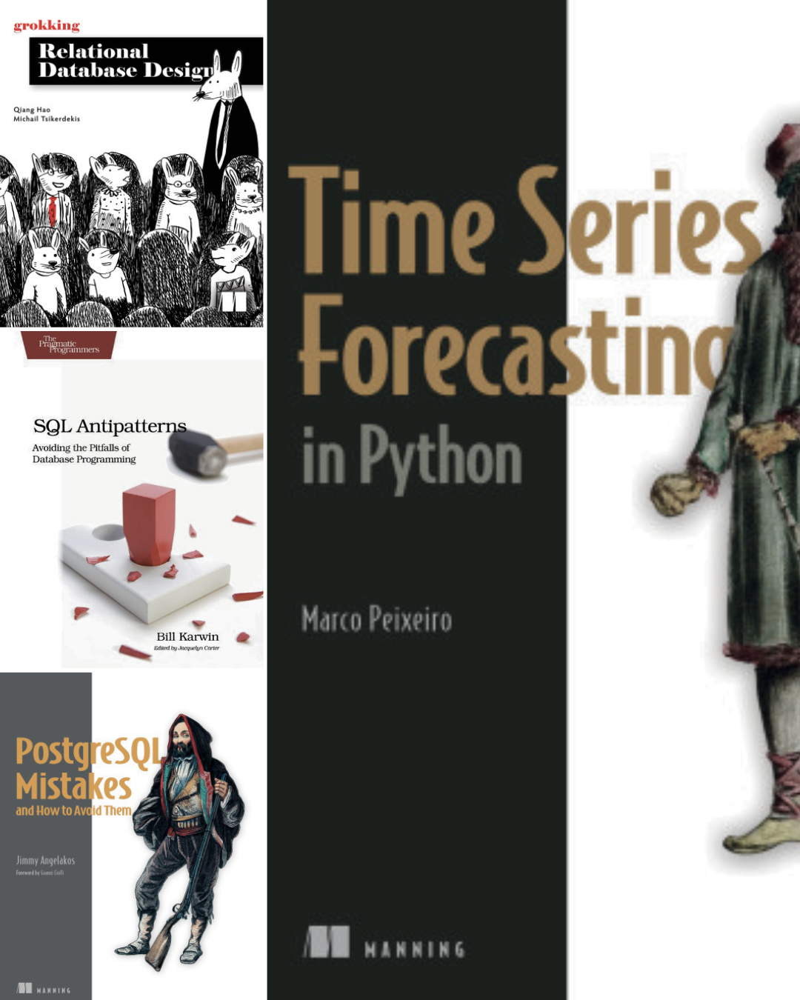
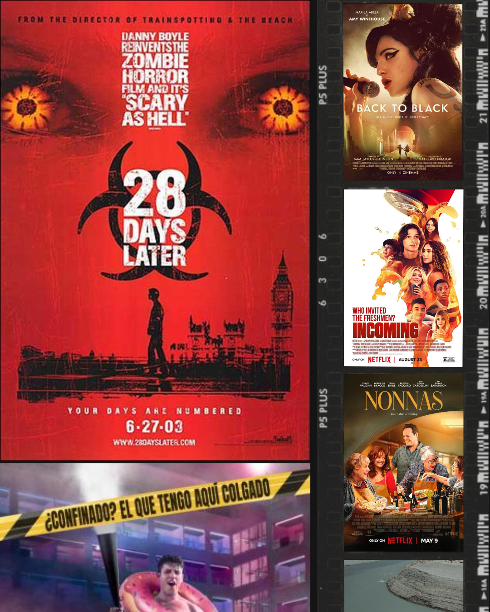

El principio del fin
Las últimas semanas de Junio siempre son el principio del fin. Es un concepto que me gusta mucho. Todo tiene un inicio y un final. En un centro educativo, cada curso es volver a comenzar. Pero en la vida, los límites no están tan claros.

¿Cuándo uno deja de ser joven y se convierte en un señor mayor? Hay un momento en el que montar en una montaña rusa deja de emocionarnos. ¿Cuándo sucede? Quién sabe. ¿Y cuál es el instante en el que una persona que pensabas que era buena deja de serlo y nos decepciona completamente? Si hablamos del amor, ya nos metemos en arenas movedizas.
La vida está llena de ciclos, de iteraciones, personas que van y vuelven, y otras que se van y se perderán en el tiempo, como lágrimas en la lluvia. Luego quedan las que siempre están ahí. Estas son las que hay que cuidar.
Lo bueno de los finales es que luego hay nuevos principios. Nuevos retos. Nuevas personas.
Hoy estoy sentimental y tengo tiempo, así que, preparaos que esta vez no escatimo en palabras.
Mirando hacia atrás¶
Este curso ha sido raro. Amargo. Por momentos, muy bien; por otros, mal; y en algunos, muy mal.
Los buenos, volver a dar clase a un grupo presencial puro, y el grupo humano de IABD, tanto profes como alumnado. Los malos, todo aquello que queda fuera de mi alcance, la dependencia de otros centros para poder avanzar, problemas de infraestructuras que no nos han dejado acabar el curso como queríamos, la nueva ley de FP o lo duro que ha sido compatibilizar la EOI con la clases (ir a clase de 19 a 21 exige una fuerza de voluntad que no sé si volveré a conseguir). Los muy malos, situaciones muy desagradables que no merecen ser contadas por aquí.
PIIAFP¶
Los Proyectos de Innovación e Investigación Aplicada en Formación Profesional (PIIAFP), como ya os comenté en la entrada anterior, no han ido todo lo bien que queríamos.
En Lara, si bien sabíamos que la incorporación de nuevos centros no iba a ser tarea fácil, hemos detectado varios puntos a mejorar que atacaremos desde inicio de curso: definir un marco común de trabajo, pautas para desplegar en producción o priorizar tareas a implementar.
En los proyectos de IoT, necesitamos datos. Por ello, antes de que acabe el mes, tenemos que dejar en Villena todos los envíos funcionando. Todos los profes de Villena han entrado al nuevo equipo directivo, y necesitan días de 28 horas. ¿Lo conseguiremos?
De momento, hemos planificado el siguiente curso de IABD (Inteligencia Artificial y Big Data) con un tercio de la dedicación lectiva del curso a los PIIAFP. Queremos que sean el eje vertebrador del curso. Y no solo consolidando lo visto en las diferentes unidades de trabajo, sino creando conocimiento a partir de los retos planteados.
Jubilación¶
Este curso he vivido la jubilación de varios compañeros y me ha hecho pensar mucho. Me quedan un mínimo de 12 años. Pueden parecer muchos, pero no lo son tanto.
Si me hubieran preguntado hace 3 años, yo era uno de los defensores de seguir dando clase, porque me gusta. Pero ya no. Al menos no todos los días. Y sí, soy consciente que como buena montaña rusa, vendrán tiempos mejores.
Cuando un compañer@ del turno de la tarde se jubila, al menos las últimas ocasiones, nos ha invitado a una merienda distendida que da pie a hablar con tod@s. Y vienen antiguos compañeros recién jubilados también. Sus caras no tienen ojeras y la sonrisa sobresale sobre el brillo de sus ojos. Personas jóvenes. Sí, con 60 años, pero llenos de vida y proyectos.
También estuve en un comida de dos compañeras que también se han jubilado, de mi antiguo IES. Mis últimos 5 años en Aspe formé parte del equipo directivo, lo que me dio la oportunidad de conocer más y mejor a mis compañer@s. Fue un regalo ver a tantas personas y tanto el cariño recibido, que a veces se echa de menos ese tipo de relación. La sensación de reconocimiento, del saber del trabajo bien hecho, de miradas sinceras de alegría por vernos.
A nivel personal y social, creo que esos 5 años, con sus aciertos y errores, di lo mejor de mí. A nivel laboral, ahora estoy más centrado en la parte técnica y menos en la personal. Puede que quedase exhausto, pero visto en perspectiva, valió la pena.
Viva la nueva ley de FP. O no.¶
Entre el proyecto intermodular, la(s) asignatura(s) optativa(s), los nuevos módulos de Digitalización y Sostenibilidad, el recorte de horas de los módulos con la excusa que se forman en la empresa o los escandalosos recortes en educación semi-presencial, dan ganas de mandarlo todo a la m*.
En la entrada anterior me desdije diciendo que iban a dejar definir optativas nuevas. Pues no. Al poco mandaron otra circular diciendo que no podían hacerlo bien en tiempo y forma. Ergo, no iba yo tan desencaminado. De hecho, aunque el alumnado en la matrícula marque una materia como optativa, al centro no le dan horas extras, con lo cual, la optatividad se convierte en una asignatura obligatoria, donde el alumnado puede que parezca que elija, pero una gran parte de la clase cursará una materia que no ha elegido.
Por otro lado, el proyecto intermodular requiere una cantidad ingente de tiempo de coordinación entre todo el profesorado del ciclo, tiempo que tenemos que dedicar gratis. En primero, con 1h lectiva, ya os podéis imaginar el desastre monumental. En segundo, con 3 horas, planteamos una propuesta de sentido común, con codocencia entre el profesorado implicado, pero parece ser que el sentido común es el menos común de los sentidos.
Luego las nuevas materias, con sólo una hora lectiva, y teniendo que colaborar además en los proyectos intermodulares, van a ser otra hora perdida donde el alumnado va a leer PDFs y hacer cuestionarios. Si un docente, para una hora lectiva, tiene que dedicarle entre tres y cuatro horas para leerse los apuntes (no hablemos de crearlos desde cero), preparar un cuestionario, responder las dudas que le hayan llegado al foro o al correo, y pensar cómo puede aportar al proyecto intermodular en cada fase, pues dime tú cuando vive. Hagamos un poco de matemáticas. Si trabajamos 18 horas lectivas, y necesitamos 3 horas (tirando por lo bajo) para cada una de las horas lectivas, nos ponemos en 54 horas semanales (cuando debemos trabajar 37,5h). A eso, súmale mensajes en Teams de los equipos docentes de los diferentes módulos que impartes, de los compañeros del proyecto intermodular, correos electrónicos, reuniones de departamento y demás. Lo de que ser profe es un chollo ya toma otro cariz.
En relación con esto, la semana pasada estuve con un buen amigo, que gana probablemente más del triple de lo que yo gano (eso sí, con menos vacaciones), y me insinuó que si no gano más, es porque no quiero. Y tiene razón. En el sector privado, con teletrabajo, podría estar ganando cerca del doble siendo puntero tecnológicamente.
Durante un día me estuve planteando preparar un curriculum y pedirme una excedencia durante un curso y medio. No lo descarto. Si sale mal, pues un par de años donde seguro que aprenderé cosas nuevas, aunque acabe harto del ordenador. Si sale bien, ¿adiós docencia? Me parece un cambio muy drástico. Eso sí, tiene que ser full teletrabajo. De momento guardo la idea en el baúl.
EOI¶
Sí, objetivo cumplido. He aprobado el C2 de Valenciano. Ya os dije que no las tenía todas conmigo en el oral, pero pasé el corte y el resto de notas fueron muy buenas.
Mirando atrás, creo que ya lo he dicho, he disfrutado mucho las clases. Este curso, muy buenos compañeros, y pese al horario, sólo he faltado un par de días.
Ya me he pre-inscrito al C1 de inglés. Esta semana sabré si he conseguido plaza, en principio, martes y jueves de 9 a 11. Bajar en bici con el fresco de la mañana es otro de los pequeños placeres que me ha dado la EOI.
El inglés, pese a que leo muchísimos libros técnicos en inglés, y otros muchos vídeos de informática, lo tengo más oxidado. Mirando la vista atrás, aprobé el B2 creo que en 2001. Luego, sobre el 2008 hice un curso de capacitación, y su consiguiente examen que aprobé, pero que no pedí el certificado y me caducó. Cagada máxima. Así pues, a refrescar. No tengo prisa. De momento, un par de años para el C1. Ya veremos después.
Para este verano me he planteado ver alguna serie en inglés, sobre todo para coger vocabulario no técnico. Lo que pasa que no quiere ver ninguna que lleve a la mitad, por el cambio de voz de las y los protagonistas. Ya os contaré por cual me decido.
Oposiciones¶
Otro de los proyectos que he llevado en marcha estos dos últimos cursos ha sido El Plan.
Hace dos cursos ayudé al que era mi compañero Javi a preparar sus oposiciones. Al parecer, la cosa fue bien, ya que sacó muy buena nota en el tema y en la encerrona, quedándose el número 2 de la Comunitat Valenciana.
Parecía que habíamos encontrado un método que funciona. Y tras hablarlo durante todo el verano, pensamos que la mejor forma de comprobarlo era volver a ponerlo en práctica.
Estos dos cursos hemos tenido a dos personas siguiendo nuestro plan. Preparando temas, haciendo problemas, cambiando la metodología de dar clase, la forma de evaluar, la organización docente. Y llegaron las oposiciones. A una de ellas (E) no le salió tema, y pese a pelar con uñas y dientes, no pasó el corte. La otra (G) tuvo más suerte, hizo un buen tema y sí que pasó a la encerrona. Aquí es donde pensábamos que mejor funciona El Plan, y parece ser que se ha confirmado. 9,6 en la encerrona, la nota más alta de toda la Comunitat Valenciana. Así pues, mi hermano Javi y yo hemos ayudado a una docente a conseguir su plaza de funcionario.
Y digo mi hermano Javi porque estos tres años que hemos compartido Plan no nos lo va a quitar nadie, cientos de cafés y almuerzos, organizando, maquinando, riendo, compartiendo alegrías y penas.
El sabor es agridulce, queríamos el 100%, pero al menos sabemos que E ha mejorado como docente y está preparada para la siguiente oportunidad. Lo de G es para sacarse el sombrero, menudo figura.
De momento, El Plan se queda en standby. Necesitamos descansar. Nos requiere mucho tiempo y salud mental, y pese a saber que funciona, llega el momento de dejar tiempo a otros quehaceres.
El curso que viene¶
Pues el viernes pasado fue la desiderata y quedó en un intento. Es difícil que casi cuarenta personas se pongan de acuerdo, y más cuando cada uno es de su padre y de su madre. Además, este año, queremos ser más papistas que el Papa y más legales que el fiscal general del estado, cuando las leyes son ambiguas y cada uno la interpreta a sus propios intereses.
Lo que para unos es A para otros es B.
Así que, aunque creo que daré lo mismo que el año pasado, es decir, Bases de datos e IABD con los proyectos de Innovación, todavía no estamos seguro. Seguiremos esperando.
Si consigo un módulo de Base de Datos, tengo pensado refinar los apuntes, además de añadir más ejercicio resueltos, reescribiendo o aportando principalmente de lo que aprenda a partir de los que saque de estos tres libros:
En IABD, estoy a full con las series temporales para los PIIAFP de IoT, con el libro

No todo es trabajar¶
A nivel musical, preparando el Low, este mes ha sido todo Empire of the Sun y Pet Shop Boys. Le he dado una oportunidad a Siloé, pero no me terminan de convencer. Acabo volviendo a Viva Suecia.
También estuvimos disfrutando las noches de Jazz en Elche y pasamos un rato maravilloso.
En cuanto al ocio digital, este último mes ha sido más bien escueto. El inicio del verano conlleva más tiempo fuera de casa, además de celebraciones y despedidas de final de curso. Para hacerlo más conciso y en forma de lista, lo más destacable:
- Cine: En esta ocasión, lo que más me ha gustado ha sido la revisión de 48 días después, que la vi en su día en el cine y sólo recordaba que me gustó mucho. La fotografía resulta peculiar, y aunque la transición entre escenas es pobre, tiene algo que engancha. Quería ver la última en el cine, a ver si la semana que viene es la buena.
Otras pelis que me han dejado un buen recuerdo son Back to Black, biopick regulero de la vida de Amy Winehouse, la comedia adolescente Inexpertos (Netflix) y Nonnas (Netflix) la historia de un restaurante donde las cocineras son abuelas. La película del mes para olvidar es Viaje de fin de curso: Mallorca (Prime Video), la cual nos adentra en los chavales que confinaron en un hotel de Mallorca durante el COVID.

-
Series: Ninguna acabada, pero de lo que estamos viendo, con Andreu, nos está encantando Pokerface, que nos ha dejado descolocados con los primeros capítulos. Por mi cuenta, estoy con la segunda temporada de El juego del calamar (Netflix), ya que acaban de estrenar la tercera y con mi mujer le estamos dando una oportunidad a los Los Sin Nombre (Movistar+), un thriller con tintes paranormales que se basa en una peli y a su vez, en el libro.
-
Videojuegos: Este mes he dejado los indies de lado y me he centrado en Suicide Squad - Kill the Justice League, alguna partida suelta a Kunitsu-Gami: Path of the Goddess (sólo me queda el jefe del final verdadero, el cual he intentado como que diez veces, y diez derrotas) y llevo a la mitad tanto Shadow of the Tomb Raider, con una Lara exploradora con más puzzles que acción, cosa que me agrada y mucho, como Lords of the Fallen un souls-like AA que no está mal.
Como un apartado aparte, vamos a darle amor a la lectura. Estos días he terminado Fletxes Desviades, una novela negra perfecta para mejorar tu nivel de valenciano. Una historia de detectives con mucho humor, lleno de locuciones y vocabulario perfecto.
Me he propuesto leer y ver pelis este verano. Ahí queda dicho.
Lo que está por venir¶
Este verano no vamos a viajar. Ya lo decidimos en navidades, que con el calor que hace, no estamos en ningún sitio mejor que en la playa. Aprovecharemos algún puente de finales de año o Semana Santa para ver mundo.
Eso no quita que no vaya a vivir la música. Ir al Low, las verbenas de los pueblos o las barracas de Elche con amigos son regalos que nos da la vida. Bueno, igual he mentido un poquito. A finales de agosto repetiré con los amigos y nos vamos unos días de desconexión, senderismo, pozas y cerveza a la Sierra de Cazorla.
El verano pasado me leí un par de libros de educación y escribí casi las primeras 5 unidades de los apuntes de Bases de Datos. En este, creo que voy a intentar desconectar más. Algún rato me sentaré delante del ordenador, pero siempre como plan B o C. Le daré a los libros que os he comentado. Pero con calma.
Entre finales y principios, aquí seguimos: aprendiendo, enseñando y tratando de disfrutar del camino.
Nos leemos el mes que viene.